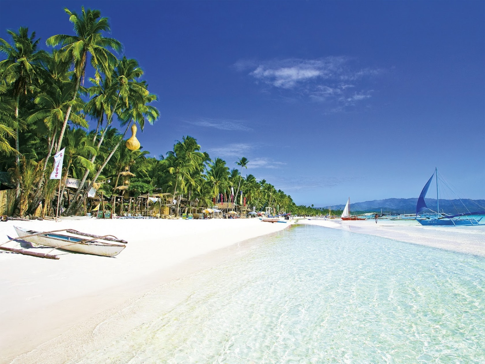

Juan dela Cruz is the national personification of the Philippines, representing the "Filipino everyman" or the average citizen. Often depicted in editorial cartoons wearing a salakot hat, barong tagalog, and tsinelas, the name symbolizes the Filipino people's common struggles and identity. It also became popular as a TV series and a rock band name.

Boracay is a world-renowned 10-km² resort island in Aklan, Philippines. It is famous for its powdery white sand, crystal-clear waters, and vibrant nightlife along White Beach. It is ideal for swimming, snorkeling, island hopping, and relaxing tropical vacations. Peak season runs from November to April.
The Chocolate Hills in Bohol are a geological formation consisting of over 1,200 symmetrical hills. During the dry season, the grass covering the hills turns brown, making them look like giant chocolate mounds. It is one of the most famous tourist attractions in the Philippines.